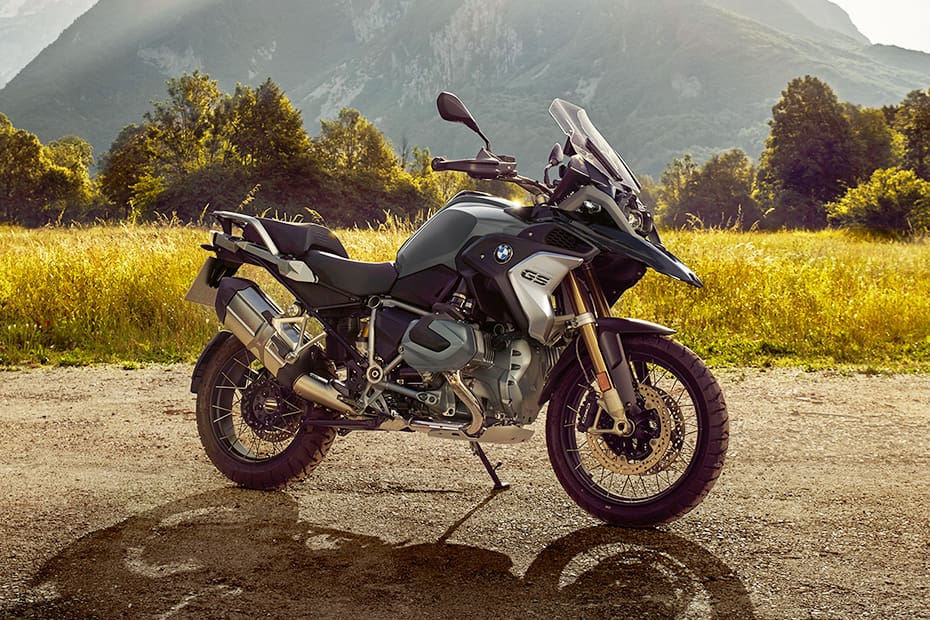
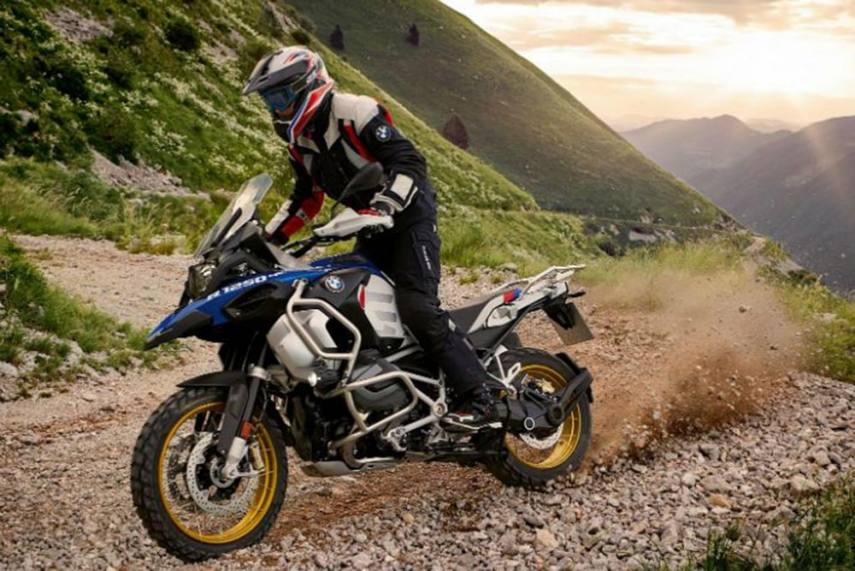
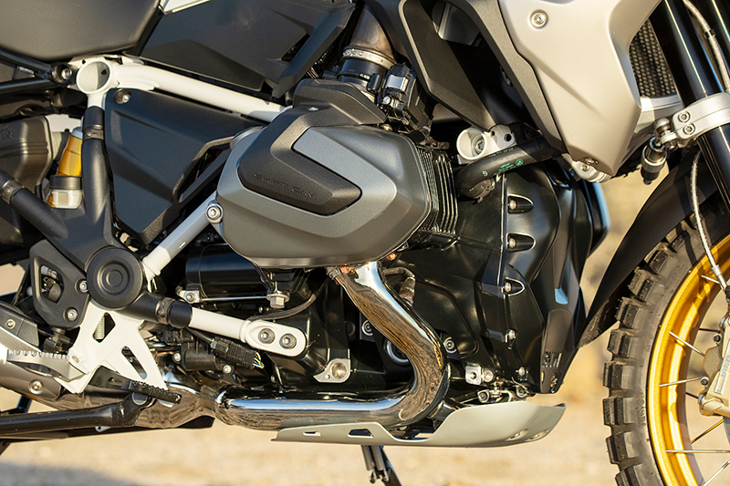
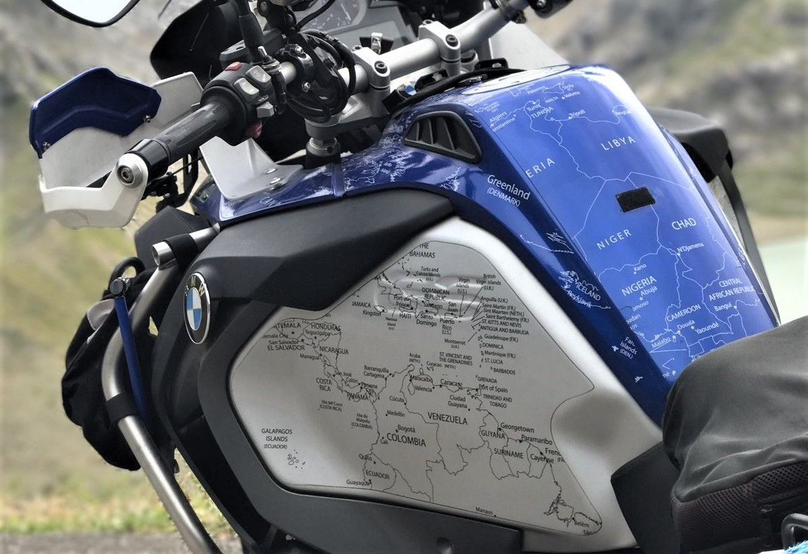

 THE BMW R 1250 GS ADVENTURE. YOUR JOURNEY IS THE DESTINATION.
BOOK A TEST RIDE The BMW R 1250 GS Adventure is built for your challenges. Rough routes, adverse conditions and the most remote destinations are no problem for the queen of travel enduros. With 1,254 cc and 136 hp, you have more than enough power for wilderness, desert or country road. In addition to the performance, the engine also gives you the endurance you need in order to reach the next stage finish. The variable camshaft control BMW ShiftCam offers you power in every engine speed range and gives the Boxer engine an unprecedented culture. No matter what adventure drives you, the BMW R 1250 GS Adventure is ready to go with you.
THE DESIGN OF THE R 1250 GS ADVENTURE.
One destination – many routes.
 Well-trodden paths are not your style? Turn your BMW R 1250 GS Adventure into your own bike with customization options. All variants have a robust appearance with cross-spoked wheels, engine protection bars and hand protectors. Each style has individual details and visually sets a statement. With the basic version, you show cool elegance in Ice Grey. The Style Exclusive makes a sturdy and confident figure, and with the Style HP you underline your claim to performance in motorsport colors. No matter your style – the BMW R 1250 GS Adventure is ready for adventure.BMW Motorrad Option 719. BMW Motorrad Option 719 offers especially high-quality and design-defining Billet Pack packages for the R 1250 GS Adventure. The HP Billet Packs underline the sporty character of the machine with aluminum components in two-color look. The Option 719 Classic Billet Pack sets stylistic accents with a pure character in a silver-colored look.  The scope of each package extends to: -Cylinder head cover left / right -Engine housing cover -Cover expansion tank left / right -Adjustable brake lever -Clutch lever adjustable -Mirror left / right -Adjustable foot levers left / right 